Zatím naše největší expedice co do počtu ujetých kilometrů i počtu dnů strávených na kole. Trocha statistických údajů, odkazy a hlavně deníček, tak jak ho napsal Pája...
| Kdy | 10.7. - 5.8.2004 (27 dnů) |
|---|
| Kolik | 2800 km |
|---|
| Účastníci | Franta, Pája, Mišák |
|---|
| Přejeté průsmyky | Brenner pass (1371m), Jaufenpass (2094m),
Passo dello Stelvio (2758m), Umbrail pass (2501), Pass dal Fuorn (2149m),
Julierpass (2284m), Passo del San Bernardino (2066),
Col du Grand St Bernard (2473m), Furkapass (2436m), Brünigpass (1008m)
|
|---|
| Trasa | GoogleEarth mapa (kmz) |
|---|
| Odkazy | (galerie nedostupná),
Trasa - mapa, Deníček (pdf vezre) |
|---|
| Odkazy jinam | Interaktivní cyklistická mapa Švýcarska, Seznam Švýcarských cyklotras, Jiný cestopis |
|---|
Deníček cesty (autor Pája, přepis Zuzka)
1.den
vzdálenost: 80 km | čas: 4:05 h:m | pr.: 20,6 km/h | max.: 51,8 km/h

Studánky: Po nabalení kol jsme vyrazili do mírného deště. Český celník nás uvítal slovy: "Kluci, proč to děláte?" a další věta byla: "že se vám do toho chce!" Rozloučil se slovy, že lépe bude až příští rok. Na rakouské straně byl člověk o poznání víc sportovně založený a po krátkém rozhovoru nám popřál šťastnou cestu. Po výjezdu do kopce se nám otevřel krásný výhled na Šumavu.
Bad Leonfelden: Po vyfocení u kostela a marném hledání cyklo cesty vyrážíme dál na Linz.
Linz: Konečně přestalo pršet a my narazili na první kolní cestu. Ta nás přivedla až do centra města. Tam jsme si vyzvedli na informacích mapu cyklotras zdejší oblasti. Je to moc pěkné město a hlavně je v něm dobře vyřešená síť kolních cest.
Pořád podél vody jsme dojeli za Wels, kde jsme našli krásnou budku akorát tak pro nás. Ráno se krásné počasí během tří hodin proměnilo ve standardní pochmurno. Chvíli před odjezdem nás navštívil majitel nedalekého domu a obdaroval nás třemi krásně vypečenými rohlíčky. Jaký kraj, takový mrav. :-)
2.den
vzdálenost: 120 km | čas: 6:12 h:m | pr.: 20,25 km/h | max.: 53,7 km/h
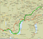
Pokračovali jsme tedy dál po cyklo-trase směr krásná rakouská jezera Altersee a Mordsee. Zde nás zastihlo jak sluníčko tak krásná přeháňka. Dále jsme pokračovali po silničce směr Salzburg a kus za Eugendorfem jsme nalezli útočiště pod stříškou seníku.
3.den
vzdálenost: 92,65 km | čas: 4:55 h:m | pr.: 19,72 km/h | max.: 44,2 km/h
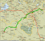
Opět jsme se probudili do deštivého rána, sbalili se a vyrazili do Salzburgu na snídani. Něco jsme pojedli u prvního supermarketu, který jsme našli a začali jsme se prokousávat městem směr Lofer. Několikráte jsme se ztratili a opět našli a než jsme trefili to správné údolí, tak jsme najezdili krásných 20 km. Přerývavě poprchává a dělí nám cestu na spoustu přestávek a zrychlených přesunů. Dvoje hranice jsme přejeli nevida celníka a stihli také ještě nakoupit v Loferu. Pak přestalo pršet a tak jsme se vydali nahnat nějaké kilometry po široké rakouské státovce. Šero nás zastihlo až za Sant Johan in Tirol, kde se nám také povedlo najít přepychový bungalov.
4.den
vzdálenost: 109 km | čas: 5:35 h:m | pr.: 20,44 km/h | max.: 43,3 km/h
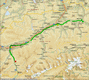
Zrána jsme zjistili drobné trhliny v jinak neporušené střeše a krajina kolem nás byla opět zahalena do dešťových mraků. Přispali jsme si a za neustávajícího mrholení jsme vyrazili na cestu. Po několika zastávkách kvůli gradujícímu dešti jsme dorazili do Wörglu, kde jsme nakoupili a vyrazili krásným údolím směr Schwaz. Svačinku o druhé jsme spáchali v kapličce při výborném chlebu s ďábelskými toasty. Ve Schwazu jsme ještě jednou doplnili zásoby a pokračovali údolím plným mraků.
Insbruck - krásné město mezi vysokými horami jsme projeli dost rychle, protože se již smrákalo a začali stoupat do brenerského průsmyku. Zde jsme také objevili zapomenutou dřevěnou chatku, kterou jsme obydlili stylem, pro který mě napadá pouze slova COTAGE CAPTURE. Noc byla sladká ........ :-)
5.den
vzdálenost: 96,8 km | čas: 5:18 h:m | pr.: 19,02 km/h | max.: 63,7 km/h
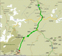
Poprvé jsme se probudili do bezdešťového počasí, ač je to neuvěřitelné.....opravdu neprší, tak hurá na kola! Dnes nás čekal zatím nejzajímavější úsek naši cesty. Již načatý výstup do Brennerského průsmyku jsme dorazili ještě dlouho před obědem a objevili zde malé poloitalské nádražní městečko bez jediného pořádného pohledu z Brenerského průsmyku. Pak přišlo krásné klesání do již značně italského městečka Sterzing, kde jsme se začali stáčet směr Jaufenpass. Stoupání bylo náročné i přes krásné počasí, které kupodivu vydrželo déle než několik minut. Zdolali jsme ho zhruba za 3 hodinky. Plni radosti za zdolání prvního pořádného pasu jsme se pustili do 20 km dlouhého klesání do Sant Leonarda. Město jsme prolítli ještě rozjetí z Jaufenpassu a zastavili se až o 10 km dál v kempu v městě Saltuslo, kde jsme se konečně vykoupali a vymydlili až nám lezli mydlinky z uší! :-)
6.den
vzdálenost: 90 km | čas: 6:37 h:m | pr.: 14,15 km/h | max.: 46,2 km/h
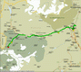
Tentokrát jsme vstali, ale opravdu brzy, dokonce tak brzy, že ještě spal i správce kempu a vyrazili směr Merano, kam jsme po půl osmé dorazili čekajíce otevřené náruči supermarketů. Místo toho jsme ovšem spatřili rozespalé tváře několika bloudících Italů. Supermarkety mají velice zajímavou otvírací dobu!
Po - Pa 8:30 - 12:00, 15:00 - 19:00
So - 8:30 - 12:00
Což nás malinko rozhodilo, ale ne zas tak jako množství zboží, kvalita a cena v nich. Značně znechuceni jsme se vydali bojovat se silným protivětrem v 50 km dlouhém údolí směr Stelvio pass. Cesta trvající nám za normálních okolností tak 3 hodiny se protáhla na skoro celý den. A tak jsme začali stoupat do Stelvia až kolem páté odpoledne. Ve 2000m nad mořem jsme již věděli, že dnes vrchol nepokoříme a tak jsme na boční cestě rozbyli tábor. Snad nás čeká klidná noc.
7.den
vzdálenost: 62 km | čas: 4:22 h:m | pr.: 14,81 km/h | max.: 64,8 km/h
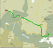
Ráno nás před sedmou hodinou probudilo sluníčko a azurová obloha. Nasnídali jsme se na sluníčku s výhledem na třítisícové hory se zasněženými vrcholky a lavinovými srázy. Sbalili jsme se a vyrazili zdolat posledních 1000m převýšení Stelvio passu. Před obědem jsme tam byli. Krásné počasí a výhled jen umocnil naší radost ze zdolání 2760m. Sotva jsme však pojedli, tak se počasí změnilo na krupobití. Hned potom, co jsme napsali pár pohledů a venku se to trošku uklidnilo, vyrazili jsme na dlouhý sjezd přes Umbrail pass do St. Maria a odtud jsme začali stoupat do Offenpassu (Pass dal Fuorn). Do čehož nám stále pršelo, takže jsme ho zdolali se smíšenými pocity a vyrazili jsme směr Zerner. Cesta vesměs z kopce se zdála být nekonečná a tak jsme (Fanda) objevili chajdu - seník, který jsme ihned zabrali. A brzy se snesla noc.
8.den
vzdálenost: 110 km | čas: 6 h | pr.: 19,19 km/h | max.: 73,7 km/h
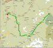
Ráno panovalo lehce zamračené počasí, které se během dopoledne umoudřilo a azuro kazilo jen pár maličkých mráčků na obloze. Na snídani jsem si sjeli do Zernezu, kde jsme v obchodě s největším sebezapřením nechali přes 50 franků a nakoupili jídlo i na neděli. Přesedlali jsme ze silnice na cyklotrasu a vyrazili do St. Moritz, kde jsme shlédli část leteckého dne a celou plejádu pětihvězdičkových hotýlků. O nějaký ten kilometr dál v Silvaplana jsme uhnuli a na 7 km vystoupali na 2284m - Julierpass. Odtud následoval krásných 50 km z kopce, které nás přivedly až k Thusis, kde jsme rozbili stan blízko malého hřbitova s kostelíkem.
9.den
vzdálenost: 90 km | čas: 5:20 h:m | pr.: 17,3 km/h | max.: 67,1 km/h
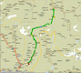
Naprosto nezvyklí na spaní v takovýchto směšných nadmořských výškách (700m) jsme se celou noc potili. Ráno jsme se opět rychle sbalili a sjeli do Thusis. Kousek za městem jsme posnídali a kolem desáté vyrazili na 50 km dlouhou pouť směr Sant Bernardino s převýšením 1400m. Cesta se táhla údolím obklopeným kolmými stěnami, které se tyčili stovky metrů nad námi. Přesto celkem rychle ubývala a tak jsme ještě před pátou stanuli na vrcholku pasu vysokého 2066m. Následoval krásný sjezd směrem k Bellinzoně, kde se nám zalíbilo jedno místečko u řeky, kde jsme se také uložili pod širák. Ale to bylo jen dočasné řešení, protože přišla večerní italská bouřka, která nás přemístila do velice slušného úkrytu pod most. Při šumění řeky se nám krásně usínalo.
10.den
vzdálenost: 96 km | čas: 4:28 h:m | pr.: 22,32 km/h | max.: 42,5 km/h
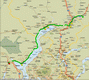
Ráno jsme si trošku přispali, protože přišel vytoužený odpočinkový den. Sjeli jsme do Bellinzony na snídaňku o dvanácté a na prohlídku hradů. Kolem jedné jsme vyrazili směrem k jezeru Lago Maggiore, kde jsme si krásně zaplavali a smyli špínu z cest. Ani jsme se nenadáli a bylo pět odpoledne. A tak jsme se sbalili a vyrazili po západní straně jezera. že to byla jediná cesta pod horami okolo jezera jsme usoudili z frekvence aut okolo nás. Nicméně cesta velice rychle utíkala a v devět jsme již obývali opět Frantou ulovený bungalov, kousek za městečkem Verbania. Znovu navečer sprchlo a zabouřilo, což bude asi v této části světa :-) pravidlem.
11.den
vzdálenost: 130,6 km | čas: 6:24 h:m | pr.: 21,22 km/h | max.: 53,7 km/h
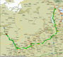
Boj s italskou populací se zdá marný. Sotva jsme vstali v ruinách starých opuštěných skladů s vraty, kterých se nikdo již léta netknul, tak se objevil u vrat traktorista a začal je otvírat. Kola i s věcmi jsme evakuovali z ohrožené zóny, tak rychle, že to snad ani nepostřehl a zmizeli polem kukuřice. Nasedli jsme a velice rychle vyrazili do Omegny u Lago di Orta na snídani. Tam v prostřed snídaně k nám však vtrhli dva italští chlapci a začali ochutnávat naši čokoládu, zkoušet naše vybavení a chrlili na nás spoustu krásných italských slov. Za pomocí gestikulací a sbalením snídaně jsme je konečně omrzeli a tím vyhráli svobodu. Pokračovali jsme okolo jezera po celkem klidné silnici a postupně uhnuli na západ po silničkách hýřících dopravou. Cesta byla klidná a rychlá až k Bielle, kterou jsme se pokusili objet z jihu. Okamžitě jsme se ztratili v přehledné infrastruktuře Itálie. Už se zdálo, že jsme v koncích, když tu se starší italský pán rozhodl, že nám poradí a zasypal nás salvou rozmanitých italských slov. Po sléze vytušil, že asi nebudeme zdejší a tak do proslovu zapojil i všechny 4 končetiny. Z toho jsme již vytušili kudy by měla vést naše další cesta. Cesta vedla po prašných silničkách i přes polorozpadlý most až jsme skoro ztratili naději, že se opět setkáme s civilizací. Proto jsme se znovu obrátili na místní obyvatelstvo. pro změnu mladší zeměměřič. Ač jinak dutý jako štoudel nám poradil další směr a tak jsme byli za chvíli na hlavní a konečně pokračovali přes 1000m vysoký pásek k řece, kde jsme našli náš další nocleh. Údolí řeky bylo tak osídlené, že i polní myš by měla problém najít místo na svoji noru a tak jsme se opět "spokojili" s mostem a hučící řekou.
12.den
vzdálenost: 125,5 km | čas: 7:02 h:m | pr.: 18,28 km/h | max.: 67,1 km/h
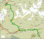
Ráno se nám skoro nechtělo vstávat, ale nakonec jsme něco pojedli a vyrazili do Aosty na obídek. Vzdálenost 50 km jsme překonali celkem hravě s vidinou dobrého oběda. V jednu jsme začali stoupat do krásného Sant Bernardo passu. Čekalo nás převýšení 1890m na 36 km. V sedm jsme nakonec dorazili nahoru a rozprostřel se nám krásný výhled na 4 tisícové hory (i Mont Blanc). Sjezd byl naprosto úžasný. Rychlostí okolo 50 km/h, které se nedalo ubránit, jsme projížděli úzkými údolími směrem k Martigny. Již se smrákalo a my jsme zoufale hledali cokoli na spaní. Pak se stalo něco neuvěřitelného. Na druhé straně jsme, poblíž turistické cesty, objevili nově vybudovaný přístřešek s obřím stolem a dvěmi kašnami. Prostě komfort.
13.den
vzdálenost: 121,8 km | čas: 6:06 h:m | pr.: 20,49 km/h | max.: 51,8 km/h
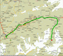
I přes nechuť opustit tak krásný nocleh jsme se ráno sbalili a vyrazili do Martigny, kde jsme narazili na hlavní silnici lemovanou pruhem pro cyklisty, která nás tak uchvátila, že jsme po ní dojeli až do Sierry. Zde jsme poobědvali a konečně osedlaly cyklotrasu, která ovšem, k našemu údivu, byla daleko horší, pač vedla také po hlavní silnici, ale bez cyklo-pruhů. Nasadili jsme smrtící tempo a i přes silné horské slunce jsme se dostali do Visp. Zde jsme se rozhodli zchladit se zmrzlinou , a tak jsem zakoupili Megapack vanilkové zmrzliny o objemu 2500 ml a s chutí jsme se do ní pustili. Výsledek se dal snadno očekávat. Přežráni jsme odložili 500 ml do koše a vydali se stoupat do Täsche, kde jsme nalezli vysněný kemp.
14.den
vzdálenost: 82,7 km | čas: 4:08 h:m | pr.: 22 km/h | max.: 63,7 km/h
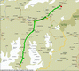
Ráno jsme si opět přispali. Opět jsme snědli kilový chléb, sundali brašny a nechali je ve stanu. A plni elánu jsme vyrazili do Zermattu, kde jsme chtěli zkouknout ceny vláčku jezdící na Gornergrad a zdolávající tak převýšení 1500 m. Cena i s kolem byla 40 franků, což nám při krásném počasí přišlo docela férové. Akorát Fanda se rozhodl toto převýšení zdolat kolmo a my, že na něj nahoře počkáme. Cesta vláčkem plná panoramatických výhledů na Matterhorn trvala 45 minut. Fandu jsme nahoře měli očekávat za hodinu a půl. Cesta nakonec však byla dost nesjízdná a tak jsme se setkali až o hodinku později. Ale počasí se zatím začalo radikálně měnit. A tak jsme si pospíšili a začal Freeride sjezd za občasného mrholení 27 km dlouhý. Počasí se opět umoudřilo a tak jsme rychle sbalili stan, naložili věci a vyrazili k dalšímu super sjezdu do Vispu. Městem jsme proletěli jako šíp a vydali se směr Brig a Furka Pass. Čas nás opět tlačil a sluníčko už bylo dávno za horami, když Fanda opět objevil opuštěný bungalov. Nebo aspoň dlouho nepoužívaný.....
15.den
vzdálenost: 168,88 km | čas: 8:13 h:m | pr.: 21,04 km/h | max.: 52,7 km/h
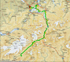
Ráno nás zaskočilo sychravé počasí. Bungalov jsme opustili dostatečně brzy, tak akorát abychom stihli otvírací dobu supermarketu. Po rychlé snídani jsme vyrazili směr Furka Pass. Počasí s nadmořskou výškou gradovalo a na Furka Passu jsme viděli sotva na 20 m. Sjezd byl velice vydařený. Byla zima a skoro až do Realpu mlha nezmizela. Prokřehlí jsme v Realpu vyždímali ponožky a pokračovali na Andermatt, kde nás potkala první vážnější porucha kola. "Mišákova KONA" přišla o jeden ze svých mnoha "teleskopických" drátů, což si vyžádalo takřka 30 min. opravu. Poté již za neustávajícího deště jsme vyrazili směr Luzern, který byl takřka nadosah - asi 100 km z kopce a okolo jezera. Počasí nás ovšem velice zpomalilo a tak jsme, i přes veliké nasazení, dorazili do Luzernu až v půl deváté a to totálně promočeni. Čekalo nás zde více než vřelé přivítání včetně teplé sprchy, měkoučké postýlky a naprosto úžasné večeři.
16.den
vzdálenost: cca 20 km | čas: cca 1 h
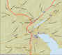
Dnešek byl konečně ve znamení odpočinku. Po výtečné snídani jsme se rozhodli pro Plovárnu, jako nejvhodnější formu odpočinku. Opalování, plavání, skákání do vody a ježdění na tobogánu jsme střídali skoro až do 7 hod. večerní. Pak jsme sedli na naše ocelové miláčky a vyrazili na prohlídku Luzernu. Konal se zde zrovna hudební festival a tak jsme svou prohlídku obohatili muzikou. Večer na nás opět čekala vynikající večeře, která završila náš krásně prožitý den.
17.den
vzdálenost: 79,7 km | čas: 4:24 h:m | pr.: 18,74 km/h | max.: 53,7 km/h
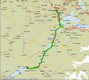
Dnes jsme měli zataženo a ještě navíc Mišákovi a Fandovi nebylo dobře, takže cesta, ač zdánlivě jednoduchá, utíkala až zbytečně pomalu. Z Luzernu jsme vyrazili dopoledne okolo jezera a již kolem druhé jsme stoupali k Brünnigpassu vysokého celých 1007m. Přejeli jsme pas a sjeli k jezerům, kde se kluci začali léčit každý po svém. Mišák si nechal centrovat zadní kolo a Fanda se koupal v karamelovém krému. Netrvalo dlouho a nadešel večer a tak jsme si vyhlídli jednu nepoužívanou autobusovou budku, abychom se dočkali rána.
18.den
vzdálenost: 123,25 km | čas: 6:10 h:m | pr.: 20,65 km/h | max.: 54,6 km/h
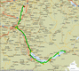
Ráno trošku sprchlo, ale pak se mraky roztrhaly a sluníčko doplnilo další letní den. Protože jsme se ráno v staré autobusové zastávce autobusu nedočkali, tak jsme vyrazili k jezeru. Jezera jsme objeli již dopoledne i s lehkou zastávkou v Interlaken. Pak už jsme se začali blížit k Bernu. Krajina o poznání úrodnější protékaná řekou Aarou, byla plná jak cestiček tak turistů. A tak jsme do Bernu vtrhli jak velká voda. Ve spleti uliček, aut, silničních oprav a turistů jsme nakonec zabrali lavičku na jednom náměstí a opět pojedli. Mišák zaujal pozici "Mrtvého koně" zatímco my s Frantou vyrazili na prohlídku města. Projeli jsme část staré zástavby a udělali pár fotek a pak se vrátili k Mišákovi. Plni zážitků jsme opustili hlavní město a vydali se na sever po lokálních cyklotrasách směr Soloturn. Asi 10 km před Soloturnem jsme si vyhlídli budku v lese, kterou jsme navečer obydleli.
19.den
vzdálenost: 54,1 km | čas: 2:55 h:m | pr.: 19,18 km/h | max.: 44,2 km/h
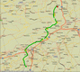
Ráno nás sice probudili dva procházející pejskaři, kteří nám ovšem nevěnovali větší pozornost. A tak jsme zanedlouho pěkné místo opustili. Snídani jsme si naplánovali až na Solothurn, který byl vzdálen necelých 10 km. Zde jsme narazili opět na řeku Aaru a podél ní pokračovali až do Wangen a. d. Aare. Zde se naše cesty opět rozešly a my zamířili více na sever, směr Basel a naše cílová stanice Lampenberg. Poslední zastávku jsme ještě učinili v Oberdorfu, abychom zde nakoupili nějaké to jídlo na zbytek dne. A pak přišel poslední avšak vydatný 400m dlouhý kopeček se stoupáním pouhých 24%. A s brašnami byl skutečně zábavný. Ale pak nás čekal již jen Lampenberg v záři slunce na azurové obloze.
20.den
vzdálenost: 64,8 km | čas: 3:23 h:m | pr.: 20 km/h | max.: 50,9 km/h
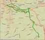
Probuzení o deváté se nám již dlouho nesplnilo a tak jsme si své přání splnili dnes. Po drobné snídaní ( 500g chleba) jsme kolem půl jedné vyrazili na odlehčených "bajcích" do Baselu. Celou hodinu jsme se prokousávali městečkama až se před námi rozprostřel Basel. Skoukli jsme město a přes nějaká ta nákupní střediska jsme zamířili na Freibad, který měl být na přehradě před Baselem. To že Frei není tak úplně gratis, ale spíš pod otevřeným nebem, jsme se dozvěděli až na místě. A tak jsme se na maličké koupalko nabourali za 6 franků. Zde jsme potkali Aňu. Zdrželi jsme se tu do pozdního odpoledne a poté zvedli kotvy a vyrazili podél nedaleké říčky směr Lampenberg. Závěrečný kopeček jsme vylétli za 7 minut, abychom se měli proč sprchovat. Zde jsme potkali Elišku s Fritzem, kteří se mezitím vrátili z kolního výletu. Snědli jsme výtečnou večeři a vyrazili skouknout fotky z naší předlouhé cesty přes kopečky.
21.den
vzdálenost: 19,6 km | čas: 1:16 h:m | pr.: 17,05 km/h | max.: 67,1 km/h
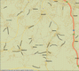
Tentokrát jsme se vzbudili opravdu pozdě. Vyhrabali jsme se chvíli před obědem a po vydatné snídani jsme se s Frantou vydali na prohlídku Wilden Steinu. Maličký zámeček jsme prohlíželi akorát tak dlouho, abychom stihli oběd. Opět nacpání až k prasknutí jsme opět sedli na kola a vyrazili nakupovat do Oberdortu. Zde si Franta pořídil výbornou švýcarskou flaštičku. Pak jsme zavítali do supermarketu. Vybaveni 4,5 kg chleba jsme se vyštrachali zpět do Lampenbergu. A to tak akorát včas, abychom stihli grilování v nedalekém lesíku. Opět přecpání jsme si ještě zahráli "na schovávanou", což nám kupodivu příliš nešlo a odebrali jsme se zpět domů. Ovšem jen proto abychom ještě zdolali 2,5 l zmrzliny při pár partičkách sola. Večer jsme okolo druhé hodiny večerní završili čokoládou, abychom měli na zítřek hodně sil a energie. Jak dlouho to takhle můžeme vydržet....?
22.den
vzdálenost: 131 km | čas: 6:10 h:m | pr.: 21,83 km/h | max.: 57,8 km/h
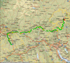
Konečně zase akce. Ráno jsme vstali po osmé a potkali Elišku, která právě přijela z Prahy. Dostali jsme obr snídani a dobalili jsme kola. Pak už následovalo jen to nejhorší a to loučení. Vybaveni 3 kg chleba jsme se pustili z kopce k Rýnu. Dnes už konečně byli na obloze nějaké mráčky, ale kdo doufal v přijatelné teploty, tak byl dozajista zklamán. Cesta se klikatila podél Rýna, ale bylo to stále po rovině a tak jsme drželi slušné tempo. Navečer jsme se konečně dostali k Rheinfall - vodopádům na Rýně. Tolik vody v pohybu jsem viděl naposledy při povodních a to rozhodně nebyly tak krásné efekty. Udělali jsme pár fotek tak abychom zabrali co nejméně Japonců a Indů a pokračovali na Kostnici. Při jízdě podél řeky jsme ale nalezli luxusní stoleček, kde jsme se rozhodli spáchat večeři a za nedalekými keři rozbili tábor. Dnes snad již konečně pod širákem.
23.den
vzdálenost: 132 km | čas: 6:30 h:m | pr.: 21,07 km/h | max.: 45,1 km/h
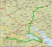
Ráno byl u Rýna zázračný klid. Poprvé jsem opravdu souhlasil, že vstávat je hřích. Nasnídali jsme se na blízké lavičce a vyrazili směr Kostnice. Na oběd jsme tam byli. Město plné turistů nás přivítalo s otevřenou náručí. Na informacích jsme si vyzvedli plánek města a zamířili k domu Mistra Jana Husa, zde jsme nalezli muzeum a galerii otevřenou dokonce i dnes. V muzeu bylo hodně knížek a nějaké malby z upálení. Dlouho jsme se nezdrželi, vzhledem k našemu velkému zájmu o historii, a vyrazili podél jezera k Dunaji. Byl krásný slunečný den a tak jsme zamířili na Freibad k jezeru tentokrát byl i vstup gratis, což nás velice potěšilo a tak jsme se zde také naobědvali. Občerstveni koupelí jsme vyrazili dále. Ovšem technické problémy se dnes začali kumulovat. Já jsem ráno píchnul, což byla vlastně maličkost, ale Mišák s Frantou přišli každý o jeden ze svých teleskopických drátu na zadním kole. Což je v Mišákovým případě již třetí v pořadí, protože již včera jeden oplakal. Dobu nutnou na opravu vyplnila přeháňka a tak jsme za chvíli mohli pokračovat opět na sever. Cesta k Dunaji se zdá být nekonečná, ale nakonec jsme dojeli na kopec nad ní a zaparkovali kola na nedaleké louce. Dnes znovu pod širákem. Snad nás počasí nezradí.....
24.den
vzdálenost: 167 km | čas: 7:38 h:m | pr.: 22,39 km/h | max.: 50,9 km/h
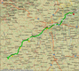
Počasí opět vydrželo a tak nás ráno opět probudilo sluníčko. Sjeli jsme do Mengen na snídani a Mišák vzal svoji Konu do depa na instalaci chybějících drátů. Poprvé jsme nakoupili v Německu a po desáté vyrazili po známé Donau-Radweg. Výborná asfaltová cesta se střídala s prašnou a tak jsme již ve 3 odpoledne byli v Ulmu. Trochu jsme se zde promotali a dali obídek. Nebýt menších problémů s Frantovými kotouči a středy, tak by cesta ubíhala až kouzelně rychle. Je tu trošku problémek najít nějakou pitnou vodu o vaně ani nemluvě. Večer jsme objevili přepychovou budku u fotbalového hřiště, kterou jsme samozřejmě bez váhání zabrali.
25.den
vzdálenost: 173 km | čas: 8:08 h:m | pr.: 21,81 km/h | max.: 56,7 km/h
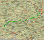
Tentokrát nás probudily kropiči fotbalového trávníku. Nebe bylo opět přepychově azurové a tak jsme bez váhání vyrazili do Donauwörthu. Tentokrát jsme to vzali po silnici nebo spíš po přepychovém chodníčku vedle ní. Zde jsme se opět napojili na Donauweg. Cesta několikráte křižovala Dunaj a tak cesta ubíhala jen velice pomalu. Ve dvě jsme byli v Ingolstadtu a dali si obídek. Pak jsme opět osedlali Donauweg, kde Mišák a Fanda ulovili dvě přebytečné značky. Cesta se opět motala sem, tam a tak jsme se rozhodli přejít na silnici. Což možná nebyl úplně nejlepší nápad, protože jsme najezdili na značné vrchařské etapě pěkných pár kilometrů navíc. A tak jsme se raději vrátili zpět na cyklo trasu. Což byl také dobrý tah, protože jsme začali krásně kopírovat všechny rozmanité meandry Dunaje. Skoro v Regensburgu jsme za křovím objevili skovanou boudu s vysílačem. A za tím křovím jsme se skryli i my........
Večer nás ještě stihla navštívit neznámá postava, ale do rána již byl klid.....
26.den
vzdálenost: 162,8 km | čas: 8:08 h:m | pr.: 20,54 km/h | max.: 61,6 km/h
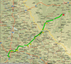
Ráno nás opět probudilo sluníčko a tak jsme vyrazili do Regensburgu na snídani. Opět jsem se projevil jako blondýnka a hned po prohlídce centra jsem se ztratil a odnavigoval naší skupinku na německou rychlostní silnici, na kterou ovšem nesměla kola. A tak jsme se trošku vrátili a v supermarketu koukli do mapy. Tam se nám trošku rozjasnilo a tak jsme vyrazili podél Dunaje do Donaustauf, kde jsem se pokusil znovu uplatnit svůj brilantní a velice originální smysl pro orientaci, ale kluci se tentokrát nedali a tak jsme trefili tu správnou odbočku na Falkenstein. Před jednou jsme tam byli. Ale jak jsme se blížili tak se nám chtělo více šlapat a tak jsme hnedka vyrazili na Cham. Zde jsme objevili Lídla a tak jsme mohli doplnit Radlery a nějaké to jídlo. Jedení výborné straceatelové zmrzliny nám zpříjemnil německy mluvící Kazach, který si přišel pokecat. A tak jme po menším zdržení vyrazili opět směr Čechy na Furth im Wald. V pět jsme byli na hranicích a v nohou jsme dnes měli akorát 100 km. Pasy po nás skoro ani nechtěli a tak jsme se pustili na sjezd po českých silničkách do Domažlic. Domažlice byly za rohem a tak jsme jimi profičeli jako vítr a hnali se po vedlejších silničkách přes všelijaké vesničky do Přeštic. Zde poprvé chyběli cedule s nějakými městy kam jsme chtěli. A tak jsme si nechali poradit. Již se ale smrákalo a tak jsme kousek před Vodokosy nalezli krásné místo v lese. Rozbil jsem tábor a kluci vyrazili otestovat české pivo, jestli se při naší nepřítomnosti nějak nezměnilo. Noc plná zvuků lesa a blízkého pole přišla záhy.....
27.den
vzdálenost: 96,31 km | čas: 4:46 h:m | pr.: 20,56 km/h | max.: 55,7 km/h
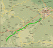
Ráno jsme již nemohli dospat, pač jsme se všichni probudili před budíčkem. Sjeli o dvě vesničky dále a dali snídaňku. Pak jsme pokračovali po krásných českých vesničkách okolo Plzně a pak ku Praze. Obídek jsme završili v hospůdce při svíčkové v Hořovicích. Pak znovu vyrazili směr Svinaře, kde Fanda již znal cestu a tak to do Dobřichovic nebyl žádný problém. Těsně před Dobřichovicemi si ještě Mišák opepřil cestu píchnutím zadního kola, ale asi jen proto, aby nám ukázal jak rychle to umí vyměnit. A v hospůdce ve sportovním areálu jsme završili naši cestu.
 Studánky: Po nabalení kol jsme vyrazili do mírného deště. Český celník nás uvítal slovy: "Kluci, proč to děláte?" a další věta byla: "že se vám do toho chce!" Rozloučil se slovy, že lépe bude až příští rok. Na rakouské straně byl člověk o poznání víc sportovně založený a po krátkém rozhovoru nám popřál šťastnou cestu. Po výjezdu do kopce se nám otevřel krásný výhled na Šumavu.
Studánky: Po nabalení kol jsme vyrazili do mírného deště. Český celník nás uvítal slovy: "Kluci, proč to děláte?" a další věta byla: "že se vám do toho chce!" Rozloučil se slovy, že lépe bude až příští rok. Na rakouské straně byl člověk o poznání víc sportovně založený a po krátkém rozhovoru nám popřál šťastnou cestu. Po výjezdu do kopce se nám otevřel krásný výhled na Šumavu.